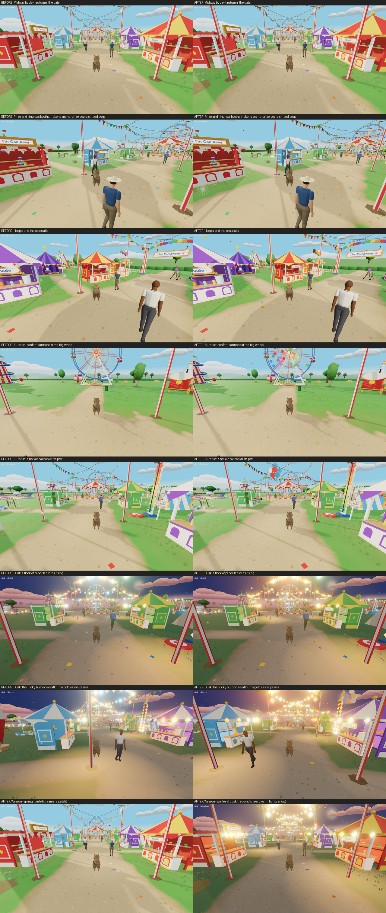

Left: before (main). Right: after (tools/verify/verify-fair.html, same shots, same clock). Rows: the midway in the date's season (autumn: rust and gold pennants, warm bulbs, flower tubs in leaf colours); the booths (blue and red winners' ribbons on the back panels, gold and white grand-prize bears, red and white ring-toss pegs); then rare surprises: confetti cannons at the big wheel, a hot-air balloon, paper lanterns rising at dusk, the lucky bulb on a stall front turning gold with a chime. Last row: ?season=spring and ?season=winter. Not visible in a still: petals, leaves or snow drift past (none in summer), a soft pop answers each dusk firework, and the surprises come on the time of day (every device sees the same one), none with reduced motion and fewer when lite. Honest note: the booth and autumn recolours are subtle at play distance; the surprises and the season on the air are the visible change.
